My Healing · The Teachers
Peter Evans, who guides me to me
The teacher I have sat with every week since 2024, and the most influential of my life. How he runs a night, how he teaches, where it comes from, the twelve things he keeps coming back to, and the lines I still hear in my head.
Tap any to see what it means. Tap + In his words on a card to hear it the way Peter said it, with where it sits in the recording.

“So my job is to guide you to you. That’s my job.”
Peter Evans · March 18, 2026